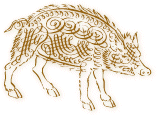

PigGen
AutoGenerator for PigIron
Copyright (c) 2008, Jack J. Woehr jwoehr@softwoehr.com PO
Box 51, Golden, Colorado 80402-0051 USA All rights
reserved.
[ Back to PigIron Index ] [
PigIron Home Page ]
[ Download
PigIron ]
Contents
PigGen read description files and generates Java source code
to embody PigIron-specific VSMAPI
parameter structures and arrays and VSMAPI calls for either
native VSMAPI functions or for your own custom VSMAPI host-side
functions.
You have two
principal uses for PigGen
- You can extend PigIron as IBM adds new VSMAPI APIs (along
with their complement of parameter structures and arrays)
without your having to understand PigIron's Java source code
intimately.
- You can extend PigIron with calls to support your own
custom REXX-coded host-side extensions to VSMAPI (since VSMAPI
on the host side supports
custom API creation).
The Development Model
VSMAPI and PigIron are extendable together:
- Write a new host VSMAPI routine.
- Write a PigGen description file for PigIron.
- Compile the description file to Java source code using
PigGen.
- Compile the Java source code generated by PigGen from the
description file into a PigIron class.
- Test your host routine by using your new class in
PigIron.
PigGen also generates
FIJI source to simplify scripting PigIron via FIJI
FIJI the ForthIsh Java
Interpreter can be used to drive or test PigIron. The same
description files used to generate PigIron's own Java source code
embodying VSMAPI function parameters, structures and functions
can be interpreted by PigGen to produce FIJI source to make it
easier to employ PigIron in a FIJI program, such as some of the
test code accompanying PigIron.
The directory pigiron/script/fiji
contains the FIJI support for PigIron. Using PigGen as described below the
file pigiron_support.fiji
was generated. It is loaded by allfunctest.fiji which
effectuates a number of PigIron tests.
Thanks to Free Original Clipart at Designed
to a T for the pig
image!
Why PigGen
VSMAPI is extensible on the Host by Rexx programming. You may
wish at sometime to extend PigIron's class library support to
support functions you and your team members have coded on the
Host. Supporting a new VSMAPI function in PigIron requires Java
classes which implement the function and its parameters. PigGen
is a macro language which will author these classes for you from
a description file. You do not even have to know Java beyond
knowing how to compile everything after PigGen has autogenerated
your code.
Interesting
Conversational Snippet on the Why of PigGen
(10:08:15) Dave Jones: looking at
class VSMCall....this is beginning to make
sense..
(10:09:46) Uncle Jax:
Right, that's the base from which all funct calls are extended.
Class commonality. But DESIGN PATTERN COMMONALITY e.g., each
VSMAPI FUnction class layout of composeInput() and
composeOutput() is not subject to inheritance factoring .. the
commonality is more easily expressed in m4
macros.
(10:10:03) Dave Jones:
OK
(10:10:18) Uncle Jax:
Makes up for Java not having templates like C++ does.
PigIron as released supports currently 114 VSMAPI
functions and their associated parameter types. All the Java
source for the individual VSMAPI function classes in pigiron/src/com/softwoehr/pigiron/functions
and their parameter types in pigiron/src/com/softwoehr/pigiron/access/parmfiles
was generated by PigGen from the description files in
pigiron/piggen/funcfiles
and pigiron/piggen/paramfiles .
PigGen is a library of macros written in the Gnu m4 macro language.
These macros allow you to create new VSMAPI parameter structures
and arrays, and new VSMAPI function calls.
PigGen is implemented in a few macro files:
- pigiron/piggen/pigsty.m4 ... common macros shared
by other macro files
- pigiron/piggen/pigstruct.m4 ... macros to define
parameter structures
- pigiron/piggen/pigarray.m4 ... macros to define
arrays of parameter structures
- pigiron/piggen/pigfunc.m4 ... macros to define
functions
There are also a few shell scripts which invoke m4 and carry
out the workflow for applying these macros to description
files:
- gen-all.sh ...
generate from all the description files in a directory
- piggen.sh ...
generate from one description file
In the case of autogeneration of
FIJI helper
code for running or testing PigIron's Java classes, there are
files parallel to those used for Java generation:
- pigiron/piggen/pigsty.m4 ... FIJI autogeneration
also uses these common macros
- pigiron/piggen/fiji_pigstruct.m4 ... macros to
define parameter structures
- pigiron/piggen/fiji_pigarray.m4 ... macros to
define arrays of parameter structures
- pigiron/piggen/fiji_pigfunc.m4 ... macros to
define functions
-
gen-fiji.sh ...
shell script to process two directories, one for function
files, one for parameter files, into one massive FIJI source
file.
- This turned out to be the easiest way to do testing!
- See pigiron/script/fiji/allfunctest.fiji
and associated files for examples using FIJI with
PigIron
PigGen as run by the shell files provided runs from its own
directory, pigiron/piggen/ and compiles description files written in PigGen
macros into Java source code.
Compiling one file
cd piggen_dir ; ./piggen.sh
macroized_description_file output_directory
E.g, assuming you have unpacked the archive
pigiron-release_num.zip into
/usr/local/src/ and have made your own directories, one
for custom source in /usr/local/work/mysrc/ and one for
java code waiting to be compiled in
/usr/local/work/myjava/:
cd /usr/local/src/pigiron/piggen ; ./piggen.sh
/usr/local/work/mysrc/my_custom_struct.m4
/usr/local/wrk/myjava
You will then wish to copy the resulting Java file
describing your struct or array or function to a directory where
it will be compiled into PigIron, either to PigIron's own
directories for this sort of thing (pigiron/src/com/softwoehr/pigiron/access/paramstructs
for structures and arrays or pigiron/src/com/softwoehr/pigiron/functions
for functions) or to your own directory which you add to PigIron.
PigGen description files describe VSMAPI structures, arrays
and functions. From the description, PigGen writes Java class
source code. You then move the source code to the correct
directory and compile it as part of a recompile of the PigIron
project. After this process is complete, PigIron is able to call
your custom-coded VSMAPI functions. All PigIron representation of
highlevel VSMAPI structures, arrays and functions were authored
using PigGen (except for a very few at the start of coding the
project which we have left in their original source form).
Note: The full PigGen description source for the
applicable components of the PigIron class library is included
with PigIron, along with a target in the master
build.xml file for building them. However, generating
the Java source from the PigGen description files is not
part of the typical PigIron. Instead, PigIron's own VSMAPI
classes were regenerated after the latest modifications of the
description files and checked in themselves as Java source code
in
pigiron/src/com/softwoehr/pigiron/access/paramstructs/
(for structures and arrays) and
pigiron/src/com/softwoehr/pigiron/functions/ (for
functions).
PigGen description files are written in the Gnu m4 macro language. To
successfully write a PigGen description file you must follow both
the rules of m4 and the rules of PigGen. m4 syntax is notoriously
difficult, but you are only required to understand a small subset
of the rules and mostly just follow directions and examples.
Easy m4
- To quote something against macro expansion in m4, you lead
it with backtick (`) and trail it with single-quote
('), e.g., doNotExpandMe(`this quoted
string') .
- Yes, it's weird, but it's been that way since the
1970's, and besides, it works as a
not-in-the-way-of-normal-text syntax for quotation.
- Corrollary: stay away from backtick (`) and
single-quote (') in your PigGen description files
except for m4 quotation purposes.
- It's possible to use those characters in text, see
m4's builtin changequote
macro.
- m4 macros take their arguments (`in', `parentheses',
`like', `these') with comma separation.
- An argument in some circumstances may be unquoted, but if
quoted, leading space before the backtick (`) in an
argument is ignored while trailing space is included in the
expansion.
- Everything in a macro file is expanded or passed on to the
output stream, hence the ubiquitous use of m4's dnl
macro which discards all subsequent text on a line and the
next newline also.
- Macros that have no arguments don't need their ()
to expand, but if there is any ambiguity when a macro abuts
non-macro text, you can use () to disambiguate.
m4 is designed to let you process any text, but there are
limitations in the use to which PigGen puts m4. This means that
you do not really need to know much more about m4 than we have
stated above to use PigGen, given that there are over one hundred
examples of description file coding included with PigGen.
Description File Coding
- The description file must be complete and correct to
generate correct Java code.
- Each line of the description file should usually end with
the dnl macro.
- The exception is when you are entering inline text such
as your own custom-coded function or text comment.
- On the first line in your description file
include() the appropriate PigGen .m4 file.
- To define a VSMAPI structure:
include(`pigstruct.m4')
- To define an array of VSMAPI structures:
include(`pigarray.m4')
- To define a VSMAPI function:
include(`pigfunc.m4')
- Names used for members and functions should always be of
one of the form lcase_lcase[[_lcase] ..] .
- When you name a structure type or array type in describing
a new structure type, you always name it in conventional class
name format (initial capital).
Macros are listed here by include file, in order in
which they normally appear in a description file. These are only
the most important macros, the ones you are most likely to use in
describing host-side VSMAPI functions to PigGen and the ones
which will most likely not be substantially altered in
PigIron.
pigsty.m4
| macro |
description |
example |
| param_namespace(`entity',
`associated_function') |
Opens a parameter namespace in which certain names
conventional to the construction of parameter description
files are pre-defined on the basis of the entity name and
associated function name.
- entity is the
stem of the entity under definition, e.g., failing which is the
stem of failing_structure ,
failing_structure_counted
, etc.
- associated_function is the VSMAPI Function
for which this parameter is being defined
param_namespace should be called right
after the include macro at the top of a description file.
It must be matched by a param_namespace_end() at
the very end of the same description file.
|
|
| param_namespace_end() |
Closes a parameter namespace. This is useful if you
generate from multiple description files concatenated
together as is done in autogenerating FIJI source, since
this macro discards several definitions conventional to the
construction of parameter description files and unclutters
the macro space.
|
|
|
function_namespace(`function_formal_name',
`significant_parameter_formal_name') |
Opens a namespace in which certain names conventional
to the construction of function description files are
pre-defined on the basis of the function name and
associated signficant parameter name. |
|
| function_namespace_end() |
Closes a namespace and drops the conventional name
definitions instanced by function_namespace . |
|
| javaize(`formal_name') |
Javaizes (or "camel cases") a formal name of the form
formal_name to
FormalName
etc.
|
|
| javaize_lc(`formal_name') |
Javaizes (or "camel cases") a formal name of the form
formal_name to
formalName
etc. with the initial letter in lower case.
|
|
member_name(`type_formal_name')
|
Converts a formal name of
a VSMAPI type used as an attribute of some VSMAPI entity
into the sort of Java-style (Camelized) notation used in
PigIron.
|
|
member_getter(`member_formal_name')
|
Generates the name of Java
getter function for a VSMAPI type used as an attribute of
some VSMAPI entity. Used to generate the name for
declaration and for execution.
|
|
member_setter(`member_formal_name')
|
Generates the name of Java
setter function for a VSMAPI type used as an attribute of
some VSMAPI entity. Used to generate the name for
declaration and for execution. |
|
pigarray.m4
| macro |
description |
example |
| pigparm_import(`import_name') |
Conveys an imported class specification to
Java.
|
pigparm_import(`com.softwoehr.pigiron.access.*') |
| pigparm_class(`name',`extends',`package',`comment') |
Declares a class to Java representing a VSMAPI array
type and commences its definition.
|
|
| pigparm_constant(`accessor', |
Creates a constant value as a static public final
member of your PigIron VSMAPI array class. |
|
| pigparm_attribute(`accessor', |
Creates a mutable attribute with setters and
getters.
|
|
| pigparm_ctors() |
Generates the basic constructor code for your PigIron
VSMAPI array class.
|
|
| pigparm_function(`accessor', |
Generates a function to your specification allowing you
to inline Java code in the PigGen description
file.
|
|
| pigparm_endclass |
Completes and closes the definition of the Java
class.
|
|
pigstruct.m4
| macro |
description |
example |
| pigparm_import(`import_name') |
Conveys an imported class specification to
Java.
|
|
| pigparm_class(`name',`extends',`package',`comment') |
|
|
| pigparm_constant(`accessor', |
|
|
| pigparm_attribute(`accessor', |
|
|
| pigparm_ctors() |
|
|
| pigparm_function(`accessor', |
|
|
| pigparm_endclass |
|
|
pigfunc.m4
| macro |
description |
example |
| pigfunc_import(`import_name') |
Conveys an imported class specification to
Java.
|
|
| pigfunc_class(`name',`extends',`package',`function_name',`comment') |
Opens the definition of the PigIron function class
which will support the calling the corresponding API on the
VSMAPI host.
|
|
| pigfunc_ctors(OPTIONAL |
|
|
| pigfunc_constant(`accessor', |
|
|
| pigfunc_attribute(`accessor', |
|
|
| pigfunc_function(`accessor', |
|
|
| pigfunc_compose_input_start() |
|
|
| pigfunc_compose_input_parm(type,value,
formal_name) |
|
|
| pigfunc_compose_optional_input_parm(type,
value, formal_name) |
|
|
| pigfunc_compose_input_end() |
|
|
| pigfunc_compose_output_start() |
|
|
| pigfunc_compose_output_parm(type, |
|
|
| pigfunc_compose_output_end() |
|
|
| pigfunc_endclass() |
|
|
Caveats
There are
a number of instances in which PigGen performs less than ideally.
All are within tolerance, but should be noted to avoid
surprises.
- Array generation via
pigarray.m4 makes the assumption that the focus of the
array is a CountedStruct type. This is
not always the case, and superfluous code is generated for
imaginary CountedStruct types for
those Arrays which do not contain a CountedStruct type. Since
the non-existent type is invoked only by reflection, the code
compiles and does no harm unless the useless function calling
the non-existent type is invoked explicitly in your code.
- Workaround: don't call the superfluous functions.
- PigGen's structure and array description syntax is a model
of the aesthetics of autogeneration; the function syntax less
beautiful. There are many coding possibilities that might occur
to you when you generation your own function files that are
allowed by PigGen's complex syntax for functions. Most of them
you will never want nor need. I apologize for the complexity
which allows for flexibility and avoids having to hand-modify
generated files.
The PigIron
Project